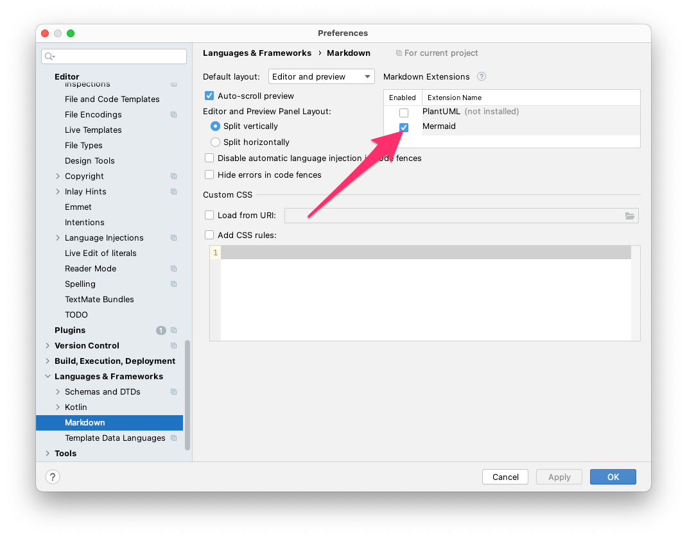

Fix Markdown Plugin in Android Studio Arctic Fox 2020.3.1
Update 2024-05-25: The struggle continues. You can find another slightly customized guide for this Android Studio version in my post: Fix Markdown Plugin in Android Studio in 2024
Update 2022-07-31: Chipmunk has this problem again. You can find a slightly adapted tutorial for this Android Studio version in my post: Fix Markdown Plugin in Android Studio Chipmunk 2021.2.1
When editing a Markdown file, Android Studio suggests installing the Markdown Plugin. The IntelliJ IDEA 2020.3 Doku (Android Studio Arctic Fox 2020.3.1 is based on that version) shows some nice shortcuts and screenshots.
But after installing the Plugin you will see the editor with some nice coloring but no extra toolbar and no preview pane.

Also the Markdown preferences only show an error message.

Some research shows that the Markdown plugin does not work properly as of Android Studio 4.1.
A comment on a more recent jetbrains issue notes that it is not an IntelliJ issue, but an Android Studio issue that is still not fixed. Also, a commenter in this issue mentions that JetBrains changed the plugin dependencies to require JCEF - Java Chromium Embedded Framework - which is pre-bundled in the JDK (aka JBR - JetBrains Runtime) with IntelliJ IDEA versions starting in 2020.2.
So the solution would be for Google to bundle Android Studio with a JBR that integrates JCEF.
Fortunately, the JBR can be changed and JetBrains makes the JBRs available for download. JetBrains even provides a Guide to change JBR, but it does not fit well with Android Studio Arctic Fox.
Change JBR in Android Studio to fix Markdown plugin
So here are the steps to change the JBR in Android Studio:
-
Download a current JBR (e.g. Version 11.0.11+9-b1341.60)
- Extract the Content to
~/Library/Java/JetBrainsRuntimefile=jbr_jcef-11_0_11-osx-x64-b1341.60.tar.gz dir=~/Library/Java/JetBrainsRuntime/${file%.tar.gz} mkdir -p $dir tar -xzf $file -C $dir --strip-components=1 -
In Android Studio open Preferences… > Plugins and install the plugin “Choose Runtime” (no restart required)
-
open menu Help > Find Action… (⇧ Shift + ⌘ Cmd + A) and search for “Choose Runtime…” and execute
-
In the dialog press … and select the folder you extracted the JBR to (in case of the folder ~/Library/Java/… it might be easier to open it in the Finder and drag and drop it into the dialog)

- Install it - Android Studio will restart
After restarting Android Studio, the Markdown plugin will be fully functional.

Bonus - Mermaid diagrams
Enable Mermaid in the Markdown Preferences to support Mermaid diagrams in your Markdown documents. If you haven’t heard of Mermaid yet, take a look at the examples to get an idea of what is possible with Mermaid.
To enable the rendering of Mermaid diagrams, open Preferences… > Languages & Frameworks > Markdown and set the checkbox at Mermaid.

Using a code block with Mermaid syntax will be rendered in the preview pane.